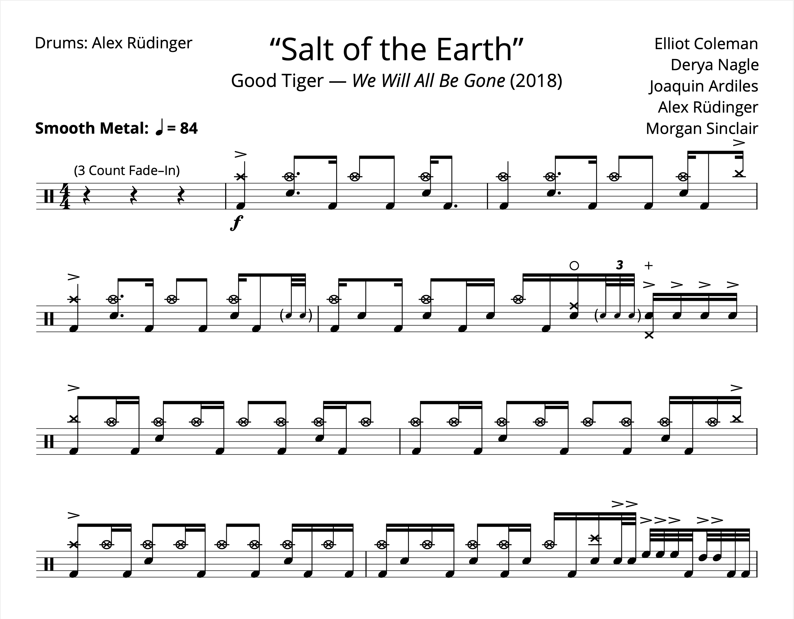

Tagged: Good Tiger
Transcription: “Salt of the Earth” — Alex Rüdinger with Good Tiger
Posted on April 11, 2021
Alrighty, time for something a bit more interesting. I found this band about three years ago, when Apple Music recommended them to me. They had just released an album, and this track “Salt of the Earth” was chosen for a new music playlist. It caught my attention right away when it came on. While the band wasn’t familiar, I recognized the drummer Alex Rüdinger after I looked into the group. Alex has played music with a whole slew of bands, most of it being rather intense metal. Not usually my cup of tea, so I wasn’t very familiar with Alex’s playing at this point. Read More . . .